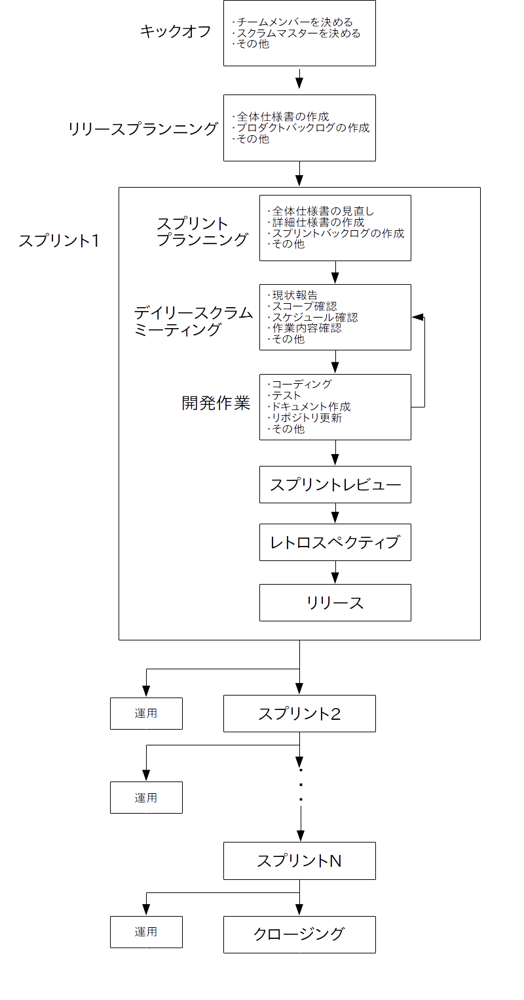

この学習項目では具体的なスクラムのプロセスについて説明していきます。
まず復習として前の学習項目で示した全体プロセス図を示します。

まず開発が始まったらキックオフ(ミーティング)(立ち上げ会議)で開発チームのメンバーとスクラムマスターを決めます。
また記述書暫定版やプロジェクトスコープを作成する場合もあります。
スクラムマスターの仕事は開発を円滑に進めるためにチームをサポートすることで、外部との交渉を行ったり、開発に必要なリソースを集めたり、開発を邪魔する障害を取り除いたり、メンバーの成長を促すため勉強会を開いたりします。
ただしスクラムマスターはプロマネとは異なって、開発計画を立てて開発チームにアレをしろとかコレをしろの様な指示はしません。
やるべきことは全て開発チームのメンバー全員で話し合って自律的に決めます(※)。
※ 逆に言うと開発規模が大きくなるにつれてメンバーが増えて話がまとまらなくなるので、スクラムの適用が難しくなります。